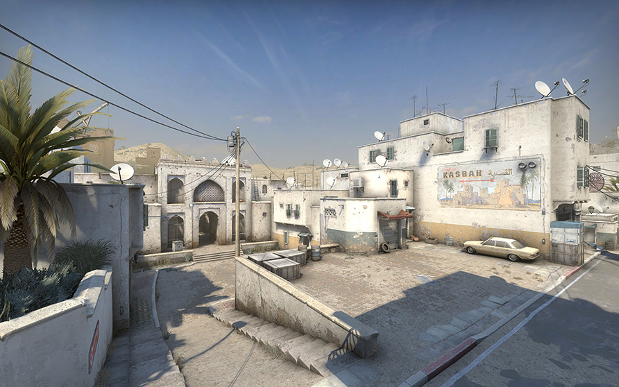

Несколько чересчур тёмных углов в туннелях теперь освещает солнце, пробивающееся через разрушенный потолок. Кроме того, мы немного подвинули остов автомобиля на точке закладки, чтобы игрокам было легче его обойти. Прореха в стене — «окно» — расширена, передвигаться рядом с ней также стало легче. Строительные леса неподалёку мы упростили: металлические трубы больше не заслонят вашу жертву. Также поменялось расположение нескольких столбов вне точки, отчего эта область выглядит аккуратнее, но не стала менее разборчивой.
ТОЧКА ЗАКЛАДКИ А: ОТЕЛЬ «АВРОРА»
Чтобы игроки легче ориентировались при входе на точку, мы убрали тёмные проходы с дальней стены. За углы заглядывать также стало проще: надоедливых водосточных труб больше нет.
Из нескольких остовов автомобилей у точки A остался лишь один, и передвигаться вокруг него и на нём стало значительно легче. Теперь опытные игроки не застрянут в воздухе, а новички не подумают, что об машину можно обжечься. Несносные осколки у стен мы также заменили на куда более предсказуемые траву и камни — теперь по ним можно спокойно ходить.
ЦЕНТР
В центральной секции карты улучшилось освещение нижних туннелей, и подкараулить противника в темноте теперь не так просто.
Здесь мы также переместили тёмные проходы, а непредсказуемое укрытие у двери и вовсе устранили. Теперь ниш в стенах гораздо меньше, поэтому вам не придётся отвлекаться по пустякам.
ГРАФИКА
Геймплей карты всё никак не стареет, но на неё явно не помешало бы завезти свежий песочек. Теперь точка закладки B находится у древней касбы на реставрации, а точка A ютит рядом с собой базар и отель. Разрешение текстур мы увеличили в четыре раза, а североафриканские модели окружения доступны всем создателям карт. Но есть и плохие новости: не стало двух пиццерий. Зато теперь на их местах располагаются стоматологии. Совпадение? Не думаем.


НОВЫЕ МОДЕЛИ ПЕРСОНАЖЕЙ
Одиозные бойцы «Элитного подразделения», классические плохиши этой карты (также известные как «Ячейка "Дюра"»), получили обновление под стать своему новому дому. Разрешение их текстур повысилось, а сами модели стали более узнаваемыми, целостными и знаковыми; эти закалённые ветераны бесчисленных битв всё так же стремятся захватить мир. Вы также заметите, что некоторые из них любят заглянуть к нашему новому парикмахеру.
СЫГРАЕМ!
С годами Dust II превратилась в одну из самых сбалансированных и знаковых карт в CS:GO. Именно поэтому мы решили аккуратно улучшить её, а не переделывать с нуля. Ваши отзывы о бета-версии помогли нам определить дальнейшие действия. Каких изменений вы ждёте на уже обновлённой карте? Мы ждём вашего мнения.